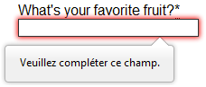
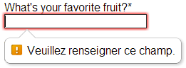
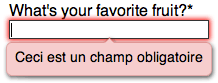

While you should always validate data on your servers, there are many benefits to additional validation of data on the Web page itself. In many ways, users are annoyed by forms. By validating form data while the user is filling it out, the user can know immediately if they've made any mistakes; this saves the user the time of waiting on an HTTP response, and saves your server from dealing with bad form input. This article covers how to go about validating form data within your form's Web content.
Using browser-supplied form validation
One of the features of HTML5 is the ability to validate most user data without relying on scripts. This is done using validation attributes on form elements.
When an element is invalid
When an element is invalid, two things occur:
- The element matches the
:invalidCSS pseudo-class; this lets you apply a specific style to invalid elements. Similarly, valid elements match the:validpseudo-class. - If the user tries to send the data, the browser will block the form and display an error message.
Validation constraints on <input> elements
All <input> elements can be validated using the pattern attribute. This attribute expects a case sensitive Regular Expression as its value. If the element's value is not empty and doesn't match the regular expression specified by the pattern attribute, the element is considered invalid.
A simple example
<form> <label for="choose">Would you prefer a banana or a cherry?</label> <input id="choose" name="i_like" pattern="banana|cherry"> <button>Submit</button> </form>
input:invalid {
border: 1px solid red;
}
input:valid {
border: 1px solid green;
}
In this example, the <input> element accepts one of three possible values: the empty string, the string "banana" or the string "cherry".
The required attribute
If an element requires a value before the form should be submitted, you can mark the element using the required attribute. When this attribute is true, the field is not allowed to be empty.
<form> <label for="choose">Would you prefer a banana or cherry?</label> <input id="choose" name="i_like" pattern="banana|cherry" required> <button>Submit</button> </form>
input:invalid {
border: 1px solid red;
}
input:valid {
border: 1px solid green;
}
Notice how the field's border is different from the previous example.
Note: <input> elements with their type attribute set to the value email or url do not need a pattern attribute to be validated. Specifying the email type requires that the field's value be a well-formed email address (or a comma-separated list of email addresses if it has the multiple attribute). Fields with the url type automatically requires a properly-formed URL.
Other validation constraints
All form elements that can receive user inputs (<textarea>, <select>, etc.) support the required attribute, but it's worth noting that the <textarea> element does not support the pattern attribute.
All text fields (<input> or <textarea>) can be constrained in size using the maxlength attribute. A field is invalid if its value is longer than the maxlength attribute's value. Most of the time, however, browsers don't let the user type a longer value than expected into text fields.
For the number fields, the min and max attributes also provide a validation constraint. If the field's value is lower than the min attribute or higher than the max attribute, the field will be invalid.
Here is a full example:
<form>
<p>
<fieldset>
<legend>Title<abbr title="This field is mandatory">*</abbr></legend>
<input type="radio" required name="title" id="r1" value="Mr" ><label for="r1">Mr. </label>
<input type="radio" required name="title" id="r2" value="Ms"><label for="r2">Ms.</label>
</fieldset>
</p>
<p>
<label for="n1">How old are you?</label>
<!-- The pattern attribute is not required on number field but
it can act as a fallback for browsers which don't implement
the number field but support the pattern attribute such as Firefox -->
<input type="number" min="12" max="120" step="1" id="n1" name="age"
pattern="\d+">
</p>
<p>
<label for="t1">What's your favorite fruit?<abbr title="This field is mandatory">*</abbr></label>
<input type="text" id="t1" name="fruit" list="l1" required
pattern="[Bb]anana|[Cc]herry|[Aa]pple|[Ss]trawberry|[Ll]emon|[Oo]range">
<datalist id="l1">
<option>Banana</option>
<option>Cherry</option>
<option>Apple</option>
<option>Strawberry</option>
<option>Lemon</option>
<option>Orange</option>
</datalist>
</p>
<p>
<label for="t2">What's your e-mail?</label>
<input type="email" id="t2" name="email">
</p>
<p>
<label for="t3">Leave a short message</label>
<textarea id="t3" name="msg" maxlength="140" rows="5"></textarea>
</p>
<p>
<button>Submit</button>
</p>
</form>
body {
font: 1em sans-serif;
padding: 0;
margin : 0;
}
form {
max-width: 200px;
margin: 0;
padding: 0 5px;
}
p > label {
display: block;
}
input[type=text],
input[type=email],
input[type=number],
textarea,
fieldset {
/* required to properly style form
elements on WebKit based browsers */
-webkit-appearance: none;
width : 100%;
border: 1px solid #333;
margin: 0;
font-family: inherit;
font-size: 90%;
-moz-box-sizing: border-box;
box-sizing: border-box;
}
input:invalid {
box-shadow: 0 0 5px 1px red;
}
input:focus:invalid {
outline: none;
}
Customized error messages
As we saw in all of the above examples, each time the user tries to send an invalid form, the browser displays an error message. The way this message is displayed depends on the browser.
These automated messages have two drawbacks:
- There is no standard way to change their look and feel with CSS.
- They depend on the browser locale, which means that you can have a page in one language but an error message displayed in another language.
| Browser | Rendering |
|---|---|
| Firefox 17 (Windows 7) |  |
| Chrome 22 (Windows 7) |  |
| Opera 12.10 (Mac OSX) |  |
To customize the appearance and text of these messages, you must use JavaScript; there is no way to do it using just HTML and CSS.
HTML5 provides the constraint validation API to check and customize the state of a form element. Among other things, it's possible to change the text of the error message. Let's see a quick example:
<form> <label for="mail">I would like you to provide me an e-mail</label> <input type="email" id="mail" name="mail"> <button>Submit</button> </form>
In JavaScript, you call the setCustomValidity() method:
var email = document.getElementById("mail");
email.addEventListener("keyup", function (event) {
if(email.validity.typeMismatch) {
email.setCustomValidity("I expect an e-mail, darling!");
} else {
email.setCustomValidity("");
}
});
Validating forms using JavaScript
If you want to take control over the native error message look and feel, or if you want to deal with browsers that do not support HTML5 forms validation, there is no way but to use JavaScript.
The HTML5 constraint validation API
More and more browsers now support the constraint validation API, and and it's becoming reliable. This API consists of a set of methods and properties available on each form element.
Constraint validation API properties
| Property | Description |
|---|---|
validationMessage |
A localized message that describes the validation constraints that the control does not satisfy (if any), or the empty string if the control is not a candidate for constraint validation (willValidate is false), or the element's value satisfies its constraints. |
validity |
A ValidityState object describing the validity state of the element. |
validity.customError |
Returns true if the element has a custom error; false otherwise. |
validity.patternMismatch |
Returns true if the element's value doesn't match the provided pattern; false otherwise.If it returns true, the element will match the :invalid CSS pseudo-class. |
validity.rangeOverflow |
Returns true if the element's value is higher than the provided maximum; false otherwise.If it returns true, the element will match the :invalid and :out-of-range and CSS pseudo-class. |
validity.rangeUnderflow |
Returns true if the element's value is lower than the provided minimum; false otherwise.If it returns true, the element will match the :invalid and :out-of-range CSS pseudo-class. |
validity.stepMismatch |
Returns true if the element's value doesn't fit the rules given by the step attribute; false otherwise.If it returns true, the element will match the :invalid and :out-of-range CSS pseudo-class. |
validity.tooLong |
Returns true if the element's value is longer than the provided maximum length; false otherwise.If it returns true, the element will match the :invalid and :out-of-range CSS pseudo-class. |
validity.typeMismatch |
Returns true if the element's value is not in the correct syntax; false otherwise. If it returns true, the element will match the :invalid css pseudo-class. |
validity.valid |
Returns true if the element's value has no validity problems; false otherwise. If it returns true, the element will match the :valid css pseudo-class; the :invalid CSS pseudo-class otherwise. |
validity.valueMissing |
Returns true if the element has no value but is a required field; false otherwise. If it returns true, the element will match the :invalid CSS pseudo-class. |
willValidate |
Returns true if the element will be validated when the form is submitted; false otherwise. |
Constraint validation API methods
| Method | Description |
|---|---|
checkValidity() |
Returns true if the element's value has no validity problems; false otherwise. If the element is invalid, this method also causes an invalid event at the element. |
setCustomValidity(message) |
Adds a custom error message to the element; if you set a custom error message, the element is considered to be invalid, and the specified error is displayed. This lets you use JavaScript code to establish a validation failure other than those offered by the standard constraint validation API. The message is shown to the user when reporting the problem. If the argument is the empty string, the custom error is cleared. |
For legacy browsers, it's possible to use a polyfill such as H5F to compensate for the lack of support for the constraint validation API. Since you're already using JavaScript anyway, using a polyfill isn't an added burden to your Web site or Web application's design or implementation.
Example using the constraint validation API
Let's see how to use this API to build custom error messages. First, the HTML:
<form novalidate>
<p>
<label for="mail">
<span>Please enter an email address:</span>
<input type="email" id="mail" name="mail">
<span class="error" aria-live="polite"></span>
</label>
<p>
<button>Submit</button>
</form>
This simple form uses the novalidate attribute to turn off the browser's automatic validation; this lets our script take control over validation. However, this doesn't disable support for the constraint validation API nor the application of the CSS pseudo-class :valid, :invalid, :in-range and :out-of-range classes. That means that even though the browser doesn't automatically check the validity of the form before sending its data, you can still do it yourself and style the form accordingly.
The aria-live attribute makes sure that our custom error message will be presented to everyone, including those using assistive technologies such as screen readers.
CSS
This CSS styles our form and the error output to look more attractive.
/* This is just to make the example nicer */
body {
font: 1em sans-serif;
padding: 0;
margin : 0;
}
form {
max-width: 200px;
}
p * {
display: block;
}
input[type=email]{
-webkit-appearance: none;
width: 100%;
border: 1px solid #333;
margin: 0;
font-family: inherit;
font-size: 90%;
-moz-box-sizing: border-box;
box-sizing: border-box;
}
/* This is our style for the invalid fields */
input:invalid{
border-color: #900;
background-color: #FDD;
}
input:focus:invalid {
outline: none;
}
/* This is the style of our error messages */
.error {
width : 100%;
padding: 0;
font-size: 80%;
color: white;
background-color: #900;
border-radius: 0 0 5px 5px;
-moz-box-sizing: border-box;
box-sizing: border-box;
}
.error.active {
padding: 0.3em;
}
JavaScript
The following JavaScript code handles the custom error validation.
// There are many ways to pick a DOM node; here we get the form itself and the email
// input box, as well as the span element into which we will place the error message.
var form = document.getElementsByTagName('form')[0];
var email = document.getElementById('mail');
var error = document.querySelector('.error');
email.addEventListener("keyup", function (event) {
// Each time the user types something, we check if the
// email field is valid.
if (email.validity.valid) {
// In case there is an error message visible, if the field
// is valid, we remove the error message.
error.innerHTML = ""; // Reset the content of the message
error.className = "error"; // Reset the visual state of the message
}
}, false);
form.addEventListener("submit", function (event) {
// Each time the user tries to send the data, we check
// if the email field is valid.
if (!email.validity.valid) {
// If the field is not valid, we display a custom
// error message.
error.innerHTML = "I expect an e-mail, darling!";
error.className = "error active";
// And we prevent the form to be sent by canceling the event
event.preventDefault();
}
}, false);
Here is the live result:
The constraint validation API gives you a powerful tool to handle form validation, letting you have enormous control over the user interface above and beyond what you can do just with HTML and CSS alone.
Validating forms without a built-in API
Sometimes, such as with legacy browsers or custom widgets, you will not be able to (or will not want to) use the constraint validation API. In that case, you're still able to use JavaScript to validate your form. Validating a form is more a question of user interface than real data validation.
To validate a form, you have to ask yourself a few questions:
- What kind of validation should I perform?
- You need to determine how to validate your data: string operations, type conversion, regular expressions, etc. It's up to you. Just remember that form data is always text and is always provided to your script as strings.
- What should I do if the form does not validate?
- This is clearly a UI matter. You have to decide how the form will behave: Does the form send the data anyway? Should you highlight the fields which are in error? Should you display error messages?
- How can I help the user to correct invalid data?
-
In order to reduce the user's frustration, it's very important to provide as much helpful information as possible in order to guide them toward correcting their inputs. You should offer up-front suggestions so they know what's expected, as well as clear error messages.
If you want to dig into form validation UI requirements, there are some useful articles you should read:
- SmashingMagazine: Form-Field Validation: The Errors-Only Approach
- SmashingMagazine: Web Form Validation: Best Practices and Tutorials
- Six Revision: Best Practices for Hints and Validation in Web Forms
- A List Apart: Inline Validation in Web Forms
Example that doesn't use the constraint validation API
In order to illustrate this, let's rebuild the previous example so that it works with legacy browsers:
<form>
<p>
<label for="mail">
<span>Please enter an email address:</span>
<input type="text" class="mail" id="mail" name="mail">
<span class="error" aria-live="polite"></span>
</label>
<p>
<!-- Some legacy browsers need to have the `type` attribute
explicitly set to `submit` on the `button`element -->
<button type="submit">Submit</button>
</form>
As you can see, the HTML is almost the same; we just removed the HTML5 parts. Note that ARIA is an independent specification that's not specifically related to HTML5, so it's still here.
CSS
Similarly, the CSS doesn't need to change very much; we just turn the :invalid pseudo-class into a real class and avoid using the attribute selector that does not work on Internet Explorer 6.
/* This is just to make the example nicer */
body {
font: 1em sans-serif;
padding: 0;
margin : 0;
}
form {
max-width: 200px;
}
p * {
display: block;
}
input.mail {
-webkit-appearance: none;
width: 100%;
border: 1px solid #333;
margin: 0;
font-family: inherit;
font-size: 90%;
-moz-box-sizing: border-box;
box-sizing: border-box;
}
/* This is our style for the invalid fields */
input.invalid{
border-color: #900;
background-color: #FDD;
}
input:focus.invalid {
outline: none;
}
/* This is the style of our error messages */
.error {
width : 100%;
padding: 0;
font-size: 80%;
color: white;
background-color: #900;
border-radius: 0 0 5px 5px;
-moz-box-sizing: border-box;
box-sizing: border-box;
}
.error.active {
padding: 0.3em;
}
JavaScript
The big changes are in the JavaScript code, which needs to do much more of the heavy lifting.
// There are less ways to pick a DOM node with legacy browsers
var form = document.getElementsByTagName('form')[0];
var email = document.getElementById('mail');
// The following is a trick to reach the next sibling Element node in the DOM
// This is dangerous because you can easily build an infinite loop.
// In modern browsers, you should prefer using element.nextElementSibling
var error = email;
while ((error = error.nextSibling).nodeType != 1);
// As per the HTML5 Specification
var emailRegExp = /^[a-zA-Z0-9.!#$%&'*+/=?^_`{|}~-]+@[a-zA-Z0-9-]+(?:\.[a-zA-Z0-9-]+)*$/;
// Many legacy browsers do not support the addEventListener method.
// Here is a simple way to handle this; it's fare from the only one.
function addEvent(element, event, callback) {
var previousEventCallBack = element["on"+event];
element["on"+event] = function (e) {
var output = callback(e);
// A callback that return `false` stop the callback chain
// and interupt the execution of the event callback.
if (output === false) return false;
if (typeof previousEventCallBack === 'function') {
output = previousEventCallBack(e);
if(output === false) return false;
}
}
};
// Now we can rebuild our validation constraint
// Because we do not rely on CSS pseudo-class, we have to
// set explicitly the valid/invalid class on our email field
addEvent(window, "load", function () {
// Here, we test if the field is empty (remember, the field is not required)
// If it is not, we check if its content is a well-formed e-mail address.
var test = email.value.length === 0 || emailRegExp.test(email.value);
email.className = test ? "valid" : "invalid";
});
// This defines what happens when the user type on the field
addEvent(email, "keyup", function () {
var test = email.value.length === 0 || emailRegExp.test(email.value);
if (test) {
email.className = "valid";
error.innerHTML = "";
error.className = "error";
} else {
email.className = "invalid";
}
});
// This defines what happens when the user try to submit the data
addEvent(form, "submit", function () {
var test = email.value.length === 0 || emailRegExp.test(email.value);
if (!test) {
email.className = "invalid";
error.innerHTML = "I expect an e-mail, darling!";
error.className = "error active";
// Some legacy browsers do not support the event.reventDefault() method
return false;
} else {
email.className = "valid";
error.innerHTML = "";
error.className = "error";
}
});
The result looks like this:
As you can see it's not that hard to build a validation system on your own. The difficult part is to make it generic enough to use it both cross-platform and on any form you might create. There are many libraries available to perform form validation; you shouldn't hesitate to use them. Here are a few examples:
- Standalone library
- jQuery plug-in:
Remote validation
In some cases it can be useful to perform some remote validation. This kind of validation is necessary when the data entered by the user is tied to additional data stored on the server side of your application. One use case for this is registration forms, where you ask for a user name. To avoid duplication, it's smarter to perform an AJAX request to check the availability of the user name rather than asking the user to send the data, then send back the form with an error.
Performing such a validation requires taking a few precautions:
- It requires exposing an API and some data publicly; be sure it is not sensitive data.
- Network lag requires performing asynchronous validation. This requires some UI work in order to be sure that the user will not be blocked if the validation is not performed properly.
Conclusion
Form validation does not require complex JavaScript, but it does require thinking carefully about the user. Always remember to help your user to correct the data he provides. To that end, be sure to:
- Display explicit error messages.
- Be permissive about the input format.
- Point at exactly where the error occurs (especially on large forms).